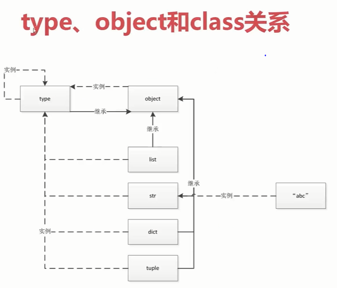
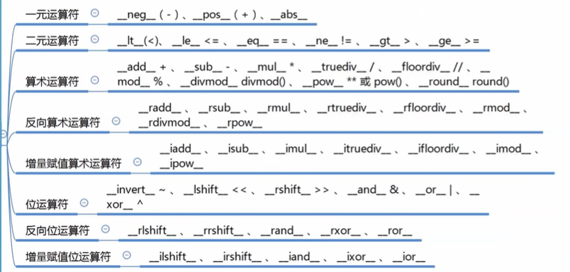
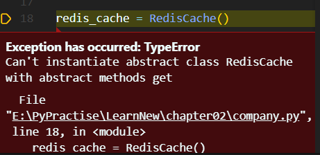
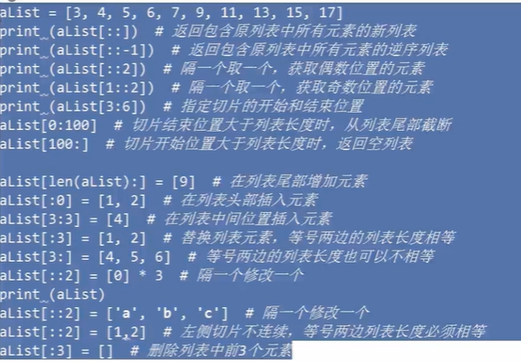

Python中一切皆变量
动态语言与静态语言的区别
静态语言与动态语言最大的区别：动态变量可以指定任何一个类型。
动态语言没有变量类型。
动态语言缺陷，无法做类型检查，只能在运行过程中发现错误。
函数和类也是对象，属于Python的一等公民
- 复制给一个变量
1 | def ask(name="Suria"): |
可以添加到集合对象中
可以作为参数传递给函数
2+3
1 | def ask(name="Suria1"): |
- 可以作为函数返回值
1
2
3
4
5
6
7
8
9
10
11
12
13
14
15def ask(name="Suria1"):
print(name)
return 9
# 因为函数没有return 值
# 函数返回函数，装饰器的原理
def decorator_func():
print("dec start")
return ask
my_ask = decorator_func()
my_ask("tom")
# dec start
# tom
type、object和class的关系
1 | a = 1 |
1 | type(1): <class 'int'> |

Python常见内置类型
对象的三个特征
- 身份
对象在内存中的地址，通过id查看身份。id()。 - 类型
int、str、list…… - 值
a = 1值为1.
类型
None（全局只有一个）
1 | a = None |
数值类型
- int
- float
- complex (复数类型)
- bool
迭代类型
序列类型
- list
- bytes、bytearray、memoryview(二进制序列)
- range
- tuple
- str
- array
映射类型(dict)
集合
- set
- frozenset
上下文管理类型
Python 的with
其他
- 模块类型
- class和实例
- 函数类型
- 方法类型
- 代码类型
- object类型
- type类型
- ellipsis类型
- notimplemented类型
魔法函数
什么是魔法函数
魔法函数，python以双下划线开头和结尾的函数。
魔法函数并不与Company挂钩，而是增强Company的特性。
1 | class Company(object): |
优化：
1 | class Company(object): |
Python魔法函数
非数学模型
字符串表示
（使用jupyter notebook操作哦）
- repr
- str
1 | class Company(object): |
1 | class Company(object): |
1 | class Company(object): |
函数、序列相关
- len
- getitem
- setitem
- delitem
- contains
迭代相关
- iter
- next
可调用
- call
with上下文管理器
- enter
- exit
数值转换
- abs
- bool
- int
- float
- hash
- index
元类相关
- new
- init
属性相关
- getattr、setattr
- getattribute、setattribute
- dir
属性描述符
- get
- set
- delete
协程
- await
- aiter
- anext
- aenter
- aexit
数学运算

一元运算符
- neg(-)、pos(+)、abs
1
2
3
4
5
6
7
8
9
10class Nums(object):
def __init__(self, num):
self.num = num
def __abs__(self):
return abs(self.num)
my_num = Nums(-1)
abs(my_num)
# 1二元运算符
- lt(<)、le<=、eq==、ne!=、gt>、ge>=
1
2
3
4
5
6
7
8
9
10
11
12
13
14
15
16
17class MyVector(object):
def __init__(self, x, y):
self.x = x
self.y = y
def __add__(self, other_instance):
revector = MyVector(self.x+other_instance.x, self.y+other_instance.y)
return revector
def __str__(self):
return "x:{x},y:{y}".format(x=self.x, y=self.y)
first_vec = MyVector(1,2)
second_vec = MyVector(2,3)
print(first_vec+second_vec)
# x:3,y:5算数运算符
- add + 、sub -、mul *、truediv /、
反向算术运算符
radd、rsub、rmul、truediv、
增量赋值算术运算符
iadd、
位运算符
invert ~、
反向位运算符
rlshift、rrshift
增量赋值位运算符
ilshift、irshift
深入类和对象
鸭子类型和多态
鸭子类型:
当看到一只鸟走起来像鸭子、游泳起来像鸭子、叫起来像鸭子，那么这只鸟就可以被称为鸭子。1
2
3
4
5
6
7
8
9
10
11
12
13
14
15
16
17
18
19
20
21class Cat(object):
def say(self):
print("I am a cat")
class Dog(object):
def say(self):
print("I am a dog")
class Duck(object):
def say(self):
print("I am a duck")
# animal = Cat
# animal().say()
animal_list = [Cat, Dog, Duck]
for animal in animal_list:
animal().say()
# I am a cat
# I am a dog
# I am a duck
抽象基类(abc模板)
抽象基类：在一个基础的类中设定一些方法，所有继承这个基类的类都必须覆盖这个基类中的方法；无法用来实例化。
应用场景
- 检查某个类是否使用某个方法
1
2
3
4
5
6
7
8
9
10
11
12
13
14class Company(object):
def __init__(self, employee_list):
self.employee = employee_list
def __len__(self):
return len(self.employee)
com = Company(["a","b","c"])
# hasattr用来判断对象是否有某种属性
print(hasattr(com,"__str__"))
print(hasattr(com,"__len__"))
# print(len(com))
# True
# True
# 31
2
3
4
5
6
7
8
9
10
11
12class Company(object):
def __init__(self, employee_list):
self.employee = employee_list
# def __len__(self):
# return len(self.employee)
com = Company(["a","b","c"])
# isinstance用来判断类型
from collections.abc import Sized
print(isinstance(com,Sized))
# False - 我们需要强制某个子类必须实现某些方法
如何模拟一个抽象基类
1 | class CacheBase(): |
在调用函数的时候就抛出异常，而不是在使用函数方法的时候抛出1
2
3
4
5
6
7
8
9
10
11
12
13
14
15
16
17import abc
class CacheBase(metaclass=abc.ABCMeta):
def get(self, key):
# 直接使用pass,不会抛出异常
raise NotImplementedError
# 抽象方法
def set(self, key , value):
raise NotImplementedError
class RedisCache(CacheBase):
def set(self, key, value):
pass
redis_cache = RedisCache()

使用isintance而不是type
1 | class A: |
类变量和对象变量
1 | class A: |
类属性和实例属性以及查找顺序
- 类属性：定义在类内部的变量和方法
由下向上的查找顺序1
2
3
4
5
6class A:
name = "A"
a = A()
print(a.name)
# A复杂的继承关系1
2
3
4
5
6
7
8class A:
name = "A"
def __init__(self):
self.name = "a"
a = A()
print(a.name)
# a菱形继承关系
1
2
3
4
5
6
7
8
9
10
11
12
13
14
15class D:
pass
class C(D):
pass
class B(D):
pass
class A(B,C):
pass
print(A.__mro__)
# 打印出查找顺序
# (<class '__main__.A'>, <class '__main__.B'>, <class '__main__.C'>, <class '__main__.D'>, <class 'object'>)B继承D，C继承E
1
2
3
4
5
6
7
8
9
10
11
12
13
14
15
16class D:
pass
class E:
pass
class C(E):
pass
class B(D):
pass
class A(B,C):
pass
print(A.__mro__)
# 打印出查找顺序
# (<class '__main__.A'>, <class '__main__.B'>, <class '__main__.D'>, <class '__main__.C'>, <class '__main__.E'>, <class 'object'>)静态方法、类方法以及对象方法以及参数
1
2
3
4
5
6
7
8
9
10
11
12
13
14
15
16
17
18
19
20
21
22
23
24
25
26
27
28
29
30
31
32
33
34
35
36
37
38
39
40
41
42
43
44# 文件名 company
class Date:
# 构造方法
def __init__(self, year, month, day):
self.year = year
self.month = month
self.day = day
# 实例化方法
def tomorrow(self):
self.day += 1
# 静态方法
# 把命名空间定义到class中
def parse_from_string(date_str):
year, month, day = tuple(date_str.split("-"))
# 其中类的方法改变，return中的调用也需要改名字
return Date(int(year), int(month), int(day))
# 类方法
def from_string(cls, date_str):
year, month, day = tuple(date_str.split("-"))
return cls(int(year), int(month), int(day))
def __str__(self):
return "{year}/{month}/{day}".format(year=self.year, month=self.month, day=self.day)
if __name__ == "__main__":
new_day = Date(2020, 2, 12)
print(new_day)
# 2020/2/12
new_day.tomorrow()
print(new_day)
# 2020/2/13
date_str = "2020-02-15"
day = Date.parse_from_string(date_str)
print(day)
# 2020/2/15
day1 = Date.from_string(date_str)
print(day1)
# 2020/2/15Python的私有属性
1
2
3
4
5
6
7
8
9
10
11
12
13
14
15
16
17
18
19
20
21
22
23
24
25
26from company import Date
class User:
def __init__(self, birthday):
# 私有属性
self.__birthday = birthday
def get_age(self):
# 返回年龄
return 2020 - self.__birthday.year
if __name__ == "__main__":
user = User(Date(1997,5,28))
# # 未使用私有属性时
# print(user.__birthday)
# # 1997/5/28
# print(user.get_age())
# # 23
# 只能通过类中的公共方法来访问私有属性
print(user.get_age())
# 23
# 但是这个私有属性只是加了小技巧，还是可以访问
print(user._User__birthday)
# 1997/5/28Python的自省
- 自省是通过一定的机制查询到对象的内部结构
1 | class Person: |
super函数
1 | class A: |
如果想要打印出a1
2
3
4
5
6
7
8
9
10
11
12
13
14
15class A:
def __init__(self):
print("a")
class B(A):
def __init__(self):
print("b")
super().__init__()
# Python2中的方法
# super(B,self).__init__()
if __name__ == "__main__":
b = B()
# b
# a
- 既然我们重写了B的构造函数，为什么还要去调用super?
多线程函数中使用，部分代码如下1
2
3
4
5from threading import Thread
class MyThread(Thread):
def __init__(self, name, user):
self.user = user
super().__init__(name=name) - super函数的执行顺序
1
2
3
4
5
6
7
8
9
10
11
12
13
14
15
16
17
18
19
20
21
22
23
24
25
26
27
28class A:
def __init__(self):
print("A")
class B(A):
def __init__(self):
print("B")
super().__init__()
class C(A):
def __init__(self):
print("C")
super().__init__()
class D(B, C):
def __init__(self):
print("D")
super().__init__()
if __name__ == "__main__":
print(D.__mro__)
# (<class '__main__.D'>, <class '__main__.B'>, <class '__main__.C'>, <class '__main__.A'>, <class 'object'>)
d = D()
print(d)
# D
# B
# C
# Adjango rest framework 中对多继承使用的经验
使用Mixin
Mixin的模式特点
- Mixin类功能单一
- 不和基类关联，可以和任意基类组合，基类可以不和mixin关联就能初始化成功
- 在mixin中不要使用super用法
python中的with语句
- 最简单的try和except用法
1
2
3
4
5
6
7
8try:
print("code started")
raise KeyError
except KeyError as e:
print("key error")
# code started
# key error - try,except, else, finally
1
2
3
4
5
6
7
8
9
10
11
12
13
14
15try:
print("code started")
raise KeyError
except KeyError as e:
print("key error")
# 没有抛出异常才会运行
else:
print("other error")
# 不管前面的有没有异常，都会运行finally中的代码
finally:
print("finally")
# code started
# key error
# finally - return语句
1
2
3
4
5
6
7
8
9
10
11
12
13
14
15
16
17
18
19
20
21
22def exe_try():
try:
print("code started")
raise KeyError
return 1
# 只有return 1存在，打印result结果是None
except KeyError as e:
print("key error")
return 2
# return 1 与 return 2 同时存在，result为2
# 没有抛出异常才会运行
else:
print("other error")
# 不管前面的有没有异常，都会运行finally中的代码
finally:
print("finally")
# return 1 2 3 都存在，打印结果result为3
return 3
if __name__ == "__main__":
result = exe_try()
print(result)上下文管理器
上下文管理器协议，可以直接使用with语句
在with语句中，进入时调用enter,退出时调用exit。1
2
3
4
5
6
7
8
9
10
11
12
13
14
15
16
17
18class Sample:
def __enter__(self):
print("enter")
return self
# 获取资源
def __exit__(self,exc_type,exc_val,exc_tb):
print("exit")
# 释放资源
def do_something(self):
print("do something")
with Sample() as sample:
sample.do_something()
# enter
# do something
# exitcontextlib简化上下文管理器
1
2
3
4
5
6
7
8
9
10
11
12import contextlib
# 可以将函数变成上下文管理器
def file_open(file_name):
print("file open")
# 生成器
yield {}
# 之后是exit的内容
print("file end")
with file_open("one.txt") as f_opened:
print("file processing")
自定义序列类
Python是基于协议进行编程的
序列类型的分类
两种分类
容器序列
序列中可以放置任意类型的数据
有list、tuple、deque
扁平序列
有str、bytes、byearray、array.array
放置同一种类型的数据
可变序列
list、deque、bytearray、array
不可变序列
str、tuple、bytes
序列的+、+=和extend的区别
- += 可以接受不同类型的数据
1
2
3
4
5
6
7a = [1,2,3]
a += (4,5)
print(a)
#[1,2,3,4,5]
a.extend([6,7])
# [1,2,3,4,5,6,7]
实现可切片的对象
模式 [start:end:step]
start 默认为0，step默认为1，当step为负整数是，表示反向切片，这是start应该比end的值大。

删除有del aList[:3]切片元素连续，del aList[::2]切片不连续，隔一个删一个。1
2
3
4
5
6
7
8
9
10
11
12
13
14
15
16
17
18
19
20
21
22
23
24
25
26
27
28
29
30
31
32
33
34
35
36
37
38
39
40
41
42
43
44
45
46import numbers
class Group:
def __init__(self, group_name, company_name, staffs):
self.group_name = group_name
self.company_name = company_name
self.staffs = staffs
# 实现翻转功能
def __reversed__(self):
self.staffs.reverse()
# 实现切片的关键
def __getitem__(self,item):
# pass
# 打印结果是：None
# return self.staffs[item]
# ['LZY', 'WYJ']
# 切片之后还是一个Group
cls = type(self)
if isinstance(item, slice):
return cls(group_name=self.group_name, company_name= self.company_name, staffs=self.staffs[item])
elif isinstance(item, numbers.Integral):
return cls(group_name=self.group_name, company_name= self.company_name, staffs=[self.staffs[item]])
def __len__(self):
return len(self.staffs)
def __iter__(self):
return iter(self.staffs)
def __contains__(self,item):
if item in self.staffs:
return True
else:
return False
group = Group(company_name="BLCU",group_name="lOCAL",staffs=['LZY','WYJ','YL','XWJ','WN'])
print(group[:2])
print(group[0])
# <__main__.Group object at 0x0000017BFFEDFA58>
# <__main__.Group object at 0x0000017BFFEDFB38>
print(group.staffs)
# ['LZY', 'WYJ', 'YL', 'XWJ', 'WN']
bisect管理可排序序列
1 | import bisect |
array 和 deque
- array
Ctrl+鼠标左键
array 只能存放指定的数据类型1
2
3
4
5
6
7
8
9import array
x = array.array('i')
x.append(2)
x.append(4)
x.extend([5,6])
print(x)
print(x.count(x))
# array('i', [2, 4, 5, 6])
# 0列表/生成器/字典推导式
列表生成式（列表推导式）
列表推导式是通过一行代码生成列表。
列表生成式性能高于列表操作odd_list = [i for in range(20) if i%2==1]生成器表达式
odd_gen = (i for i in range(20) if i % 2 == 1 )
odd_gen的类型为generator。
生成器可以转换为列表类型，odd_list = list(odd_gen)。
1 | odd_gen = (i for i in range(20) if i % 2 == 1 ) |
字典推导式
1 | my_dict = {"xz":28,"wyb":22} |
集合推导式
myset = set(my_dict.keys())myset = {key for key,value in my_dict.items()}
深入Python的set和dict
dict中的abc继承
1 | from collections.abc import Mapping, MutableMapping |
对象引用、可变性和垃圾回收
C3算法